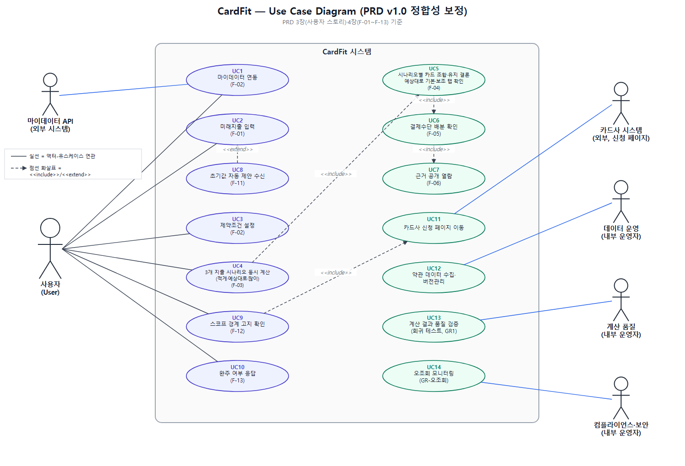

[CardFit 미래지출 카드설계 서비스] v1.1
- Owner 팀: 진정가
- 최종 업데이트: 2026-08-24
- 변경 이력:
- v0.1 → v0.2: 팀 결정사항을 기준선으로 정리하고 측정 경로·실패 케이스·의존성·ADR을 보강
- v0.2 → v1.0 — 완성도 검토 6개 항목(목표·지표/스토리·AC/기능요구/비기능/리스크·가정/범위) 전항 통과 확인 후 확정 배포
- v1.0 정합성 보정: Requirement Trace와 decision log의 3개 시나리오별 독립 카드 조합 추천 요구사항을 복원
- v1.0 → v1.1: 사용자 시나리오를 예상보다 적게 쓸 때·예상한 만큼 쓸 때·예상보다 많이 쓸 때로 변경하고 계산 정책을 확정. 추천안 이행을 자기보고·마이데이터 관측으로 검증하는 제품 요구사항과 최종 품질검토를 추가
출처:
master-deck/p01~p32발표 원고, 정본효진/0820/final/01_서비스_역기획서.md및09_PRD_Requirement_Trace_v0.1.md본 문서에 명시된 목표·임계값·기능 범위·판정 규칙은 v1.1의 제품 결정사항이다. 아직 운영 이력이 없는 지표는 목표의 효력을 낮추지 않으며, 8장의 실험을 통해 기준선을 최초 확보하고 목표 대비 차이를 측정한다.
문서 요약
CardFit은 사용자가 입력한 예상 미래지출을 기준으로 카드 조합을 계산하고, 지출 변동에도 추천 결론이 유지되는지 함께 보여주는 서비스다. 사용자는 예상금액을 한 번만 입력하며 시스템은 예상보다 적게 쓸 때(80%), 예상한 만큼 쓸 때(100%), 예상보다 많이 쓸 때(120%)를 자동 계산한다. 추천 이후에는 자기보고와 동의 범위 안의 마이데이터 후속 관측을 독립적으로 수집해 행동 완주·유지 준수·조합안 이행을 구분한다.
본 PRD는 제품 목표와 사용자 요구를 정의한다. 후속 SRS는 AD-Core-Platform 예시의 7개 섹션을 기본으로 사용하며, PRD 내용이 그 범위를 벗어날 때만 ISO/IEC/IEEE 29148:2018의 제한·가정과 의존성·검증·논리 데이터 요구사항·품질 속성 등 관련 항목을 확장한다. 표준 전체 항목을 채우는 풀 버전 SRS는 이번 변환 목표가 아니다.
목차
- 개요·목표
- 사용자와 페르소나
- 사용자 스토리와 수용 기준
- 기능 요구사항
- 비기능 요구사항
- 데이터·인터페이스 개요
- 범위·리스크·ADR·가정·의존성
- 실험·롤아웃·측정
- 근거
- PRD 최종 품질검토
- 결론 및 제품 인사이트
- 출처
1. 개요·목표
문제 정의 (Pain 지표 포함)
| # | Pain | 실패 KPI (수치화) | 측정 경로 | 연결된 Needs |
|---|---|---|---|---|
| P1 | 전월실적 구간·혜택한도·연회비가 얽혀 사용자가 스스로 카드 조합을 계산할 수 없다 | 수기 판단 소요시간 240분 — 목표(p95 ≤ 5분) 대비 48배 이상 소요 | E0 베이스라인 실험(8장): 실사용자 n=15~20 스톱워치 실측·자기보고, 베타 착수 전 확정 | N1 계산 대행 |
| P2 | 기존 카드 추천 서비스는 과거 소비만 기준으로 삼는다 | 경쟁 6곳(뱅크샐러드·카드고릴라·더쎈카드·토스·Credit Karma·NerdWallet) 중 미래소비 반영 서비스 0/6 = 0% | 경쟁사 UI·PDF 실측 조사(윤정/0818 자료), 반기 1회 재조사 |
N2 미래지출 기준 계산 |
| P3 | 계산이 맞아도 해지·전환 실행 단계에서 마찰이 크다 | 카드 해지 관련 민원 6,720건(2022) → 12,661건(2025), +88.4%(금감원) — 발급매수 증가율(+8.5%) 대비 약 10.4배 | 금감원 민원 통계 공시자료, 연 1회 갱신 확인 | N3 추천안 이행 가시화 |
| P4 (결과) | 위 세 가지가 겹쳐 사용자가 근거 없는 카드사 자동대체에 결제 포트폴리오를 위임한다 | 자동대체 시 공개되는 계산 근거 항목 수 0개 | 카드사 자동대체 안내 UI 정성 조사, 반기 1회 | N4 근거 공개 |
Needs (실패 KPI 대비 목표 임계치)
| Needs | 목표 임계치 | 현재 상태(기준선) |
|---|---|---|
| N1 계산 대행 | 결론 도달 소요시간 p95 ≤ 5분 | 수기 240분 — E0 실험으로 베타 착수 전 확정 |
| N2 미래지출 기준 계산 | 계산 시 미래 입력 반영률 100% | 0%(경쟁사 전부 과거 1년 기준) |
| N3 추천안 이행 가시화 | 선택된 추천안의 자기보고 대상 생성률 100%, 마이데이터 검증 가능·판정 불가·불일치 상태 분리율 100% | 기존 측정 경로 없음(도입 기준선 0%) |
| N4 근거 공개 | 결과 1건당 공개 근거 항목 ≥ 6개 | 0개(경쟁사는 결과 금액만 노출) |
목표 (Desired Outcome 수치화)
| 목표 | 수치화된 정의 |
|---|---|
| G1 계산을 대신한다 | 수기 240분 판단을 p95 5분 이내 결론 하나로 압축 |
| G2 미래를 기준으로 삼는다 | 계산에 미래 입력 반영률 100% — 미래 입력 없는 산출물은 결과로 취급하지 않음(400 반환) |
| G3 바꿀 가치가 있을 때만 권한다 | Net Benefit 임계 미달 시 "유지" 반환률 100% |
| G4 검증 가능하게 만든다 | 결과 1건당 공개 근거 항목 ≥ 6개 |
| G5 이행을 정확히 측정한다 | 자기보고와 마이데이터 관측을 독립 저장하고 행동 완주·유지 준수·조합안 이행·판정 불가를 24시간 이내 대시보드에 반영한다 |
| G6 예상이 달라져도 조건을 보여준다 | 지출 시나리오 3개(예상보다 적게 쓸 때·예상한 만큼 쓸 때·예상보다 많이 쓸 때)를 모두 계산한다. 첫 화면은 예상한 만큼 쓸 때의 결론을 기본 노출한다 |
성공 지표 (북극성 KPI / 보조 KPI)
북극성 KPI
| 지표 | 정의(분자/분모) | 기준선 | 목표값 | 측정 경로 | 측정 주기 |
|---|---|---|---|---|---|
| 조합안 선택률 | 결과 화면 도달자 중 조합안을 저장·확정한 인원 수 ÷ 결과 화면 도달 인원 수(사람 단위, 결과 열람 후 7일 이내 선택 인정, "유지" 결론 대상자는 분모 제외) | 운영 이력 없음, E2 Concierge Test에서 최초 기준선 확보 | ≥ 40%(중단선 20%) | result_viewed·plan_selected 이벤트 로그 집계 |
주간 |
보조 KPI
| 계열 | 지표 | 정의(분자/분모) | 기준선 | 목표값 | 측정 경로 | 주기 |
|---|---|---|---|---|---|---|
| 전환 | 결론 도달 소요시간 p95 | 온보딩 진입 ~ 결과 화면 표시까지 소요시간 분포의 p95 | E0로 확정 | ≤ 5분 | onboarding_started~result_viewed 타임스탬프 차 |
주간 |
| 전환 | 온보딩 완료율 | 마이데이터 연동+미래지출 1건 이상 입력+제약조건 저장을 모두 마친 인원 수 ÷ 온보딩(F-02 화면) 진입 인원 수 | 베타 1주차 실측으로 확정 | ≥ 60% | onboarding_started/onboarding_completed 이벤트 로그 |
주간 |
| 전환 | 근거 열람률 | 근거 패널을 1회 이상 연 인원 수 ÷ 결과 화면 도달 인원 수 | 베타 1주차 실측으로 확정 | ≥ 50% | evidence_panel_opened 클릭 로그 |
주간 |
| 유지 | 자기보고 이행률 | 완료 자기보고 항목 수 ÷ 유효 응답 항목 수. 무응답 제외 | 기존 측정 경로 없음(0%) | 기준선 측정 | POST /outcomes/{id}/self-report 응답 로그 |
월간 |
| 유지 | 관측 검증 행동 완주율 | High 신뢰도로 판정 가능한 발급·해지 항목 중 완료 항목 비율 | 기존 측정 경로 없음(0%) | 기준선 측정 | OutcomeItem.verification_status |
월간 |
| 유지 | 유지 준수율 | High 신뢰도로 판정 가능한 유지 항목 중 관측 종료 시 계속 보유한 항목 비율 | 기존 측정 경로 없음(0%) | 기준선 측정, 행동 완주율과 분리 | OutcomeItem=MAINTAIN_CARD |
월간 |
| 유지 | 조합안 이행률 | 모든 필수 항목을 High 신뢰도로 판정 가능한 조합안 중 완전 이행 조합안 비율 | 기존 측정 경로 없음(0%) | 기준선 측정 | OutcomeLog.adherence_status |
월간 |
| 데이터 품질 | 검증 가능률·판정 불가율·불일치율 | 검증 가능/전체, 판정 불가/전체, 자기보고-관측 불일치/양쪽 증거 보유 대상을 각각 집계 | 기존 측정 경로 없음(0%) | 세 지표 분리율 100% | OutcomeObservation·사유코드 |
주간 |
| 유지 | 이벤트 비종속 진입률 | 사전 정의 이벤트명 미선택·자유 카테고리로 온보딩을 완료한 인원 수 ÷ 전체 온보딩 완료 인원 수 | 베타 1개월차 실측으로 확정 | ≥ 20% | FutureSpendPlan.category 자유입력 플래그 집계 |
월간 |
| 탐색 | 다른 예상 탭 열람률 | 결과 화면 도달자 중 예상보다 적게 쓸 때 또는 예상보다 많이 쓸 때 탭을 1회 이상 연 인원 수 ÷ 결과 화면 도달 인원 수 |
신규 도입 기준선 0% | 기준선 측정 | scenario_tab_viewed 이벤트 로그 |
주간 |
| 유지 | D+90 재방문율 | 결과 확정일 기준 D+90 재방문 인원 수 ÷ 결과 확정 인원 수 | 정식 서비스 전환 후 확정 | 베타 검증 기간(12주)에는 측정 대상에서 제외 — 정식 전환 후 D+90 코호트로 측정 이관 | 앱 방문 로그(D+90 코호트) | — |
Guardrail (하나라도 초과 시 롤아웃 즉시 중단)
| # | 지표 | 임계 | 이유 |
|---|---|---|---|
| GR1 | 계산 오류율 | ≤ 0.1% | 규칙 엔진은 결정론적 — 오류는 곧 버그 |
| GR2 | 불필요 신규카드 추천 | 0%(12개월 Net Benefit이 50,000원 미만인데 변경을 추천한 건수 0건) | G3 위반 = 차별점 붕괴 |
| GR3 | 근거 미공개 결과 노출 | 0건 | 차별점 ③(검증 가능한 계산)의 전제 |
| GR4 | 실행 지원 오인 문구 노출 | 0건 | 스코프 위반 = 규제 리스크 |
| GR5 | 데이터 최신성 경고 미표시 | 0%(세부 임계치는 5장 참고) | Table Stakes |
차별 가치 (Differential Value)
기존 대안(수기 계산, 뱅크샐러드형 서비스) 대비 5개 지표를 수치로 비교한다.
| 지표 | 기존 대안 | CardFit | 개선폭 | 검증 근거 |
|---|---|---|---|---|
| 판단 소요시간(성능) | 수기 240분 | p95 5분 | 약 48배 단축 | E0 베이스라인 실험 |
| 비교 계산 단위(범위) | 후보 카드 1장에 재적용(뱅크샐러드 PDF 실측) | Constraint(F-02) 설정 상한 이내 전 조합 계산(예: 최대 5장 설정 시 2⁵−1=31개 조합까지 전수 계산하며 p95 5초 SLA 유지) | 1장 → 최대 31개 조합(설정값 기준) | NFR(5장) p95 SLA와 결합 검증 |
| 계산 정확도(순혜택 우위 비율) | 조합 계산 자체가 없어 비교 불가 | 동일 스냅샷 비교에서 순혜택 차액 > 0 케이스 ≥ 70% | 0% → 70%(목표) | E5 벤치마크(n=20, 뱅크샐러드 vs CardFit) |
| 계산 근거 공개 항목(신뢰) | 0개(결과 금액만 노출) | 6개 이상(실적구간·한도·연회비·제외조건·기준일·rule_version) | 0 → 6개 | US-B AC1, GR3 |
| 전환비용 반영 항목(비용) | 1개(연회비만 반영) | 3개(연회비·실적 재적립 손실·발급 대기) | 1 → 3개 | F-04 Net Benefit 산식 |
성능(판단 소요시간)·정확도(순혜택 우위 비율)·비용(전환비용 반영 항목) 3개 축 모두 수치와 검증 실험을 갖춘다. 동일 스냅샷 n=20 벤치마크(E5)로 "3축 전부 우위·순혜택 차액 > 0인 케이스 ≥ 70%"를 검증한다 — 8장 실험표 참고.
2. 사용자와 페르소나
페르소나 스펙트럼 (12명, 4계층)
| 유형 | 인원 | 대표 인물 | 이 계층의 역할 |
|---|---|---|---|
| 핵심(Core) | 5 | 이서연(혼인)·김도윤(결혼+이사)·박서준(자동대체 불신)·한지민(프리랜서·이사)·최유리(발령·회계전문가) | 기준 수요 — Job A·B 원천 |
| 확장(Adjacent) | 3 | 정하늘(기존 서비스 이용자)·오세훈(이직)·강민재(자녀 독립·지출 감소) | Job F — 이벤트명에 안 걸리는 수요 |
| 극단(Extreme) | 2 | 윤태호(카드 20장+, 관리 포기)·신은서(해지 3회 시도·0회 성공, 인터뷰 1건 기반 사례) | 실패의 두 원인 — 내부 과부하 vs 외부 마찰 |
| 비활성(Non-user) | 2 | 배정호(디지털 비친화)·조민아(예측 자체를 불신) | v0.1 명시적 제외 대상 |
대표 4인과 Pain·Needs 연결
| 인물 | Pain | Needs | 서비스 대응 |
|---|---|---|---|
| 이서연(Core) | P1 스스로 계산 불가, P4 근거 없는 위임 | N1·N2·N4 | F-01~F-04, F-06 |
| 박서준(Core) | P3 실행 마찰, 카드사 설명 불신 | N3·N4 | F-06(근거), F-13(추천안 이행 측정) |
| 신은서(Extreme, 인터뷰 1건 기반 사례) | P3 실행 실패(상담사 만류, 3회 시도 0회 성공) | N3 | F-13 측정만 — 대행 권한 없음 |
| 조민아(Non-user) | 예측 입력 자체 불신 → 온보딩 이탈 | N1 완화 필요 | F-11 과거 패턴 기반 초기값 자동 제안 |
신은서와 조민아는 이 프로젝트의 두 반증 사례다. 신은서는 추천안 이행 지표 설계를, 조민아는 온보딩 설계(F-11)를 바꿨다.
고객 여정 — 이서연(Core) 기준, 7단계
journey
title 이서연(Core)의 여정과 이탈 지점
section 발견
트리거 - 웨딩홀 계약: 2: 이서연
서비스 인지: 3: 이서연
section 입력·계산
온보딩·입력 (F-01·F-02): 2: 이서연
3개 시나리오 동시 계산 (F-03): 4: 이서연
section 결정·실행
예상한 만큼 기본·다른 예상 탭 비교 (F-04): 3: 이서연
시나리오별 근거 확인 (F-06): 4: 이서연
실행 - 스코프 경계: 3: 이서연
section 이후
다음 달 실제 혜택 확인: 5: 이서연
12명 중 4명이 여정을 끝까지 이어가지 못한다: 이탈 지점과 대응
| 인물 | 단절 지점 | 원인 | 대응 |
|---|---|---|---|
| 배정호 | 인지 | 디지털 채널 자체 거부 | ❌ 앱으로 해결 불가 — v0.1 제외 |
| 조민아 | 온보딩 | 미래 예측 입력 자체 불신 | ✅ F-11 초기값 자동 제안 |
| 윤태호 | 조합 비교~실행 | 카드 20장+ 정보 과부하 | 🔶 F-07 단계적 제시(Could) |
| 신은서 | 실행 | 상담사 만류(인터뷰 1건 기반) | 📊 F-13 측정만 — 대행 권한 없음 |
가장 취약한 전환점은 온보딩과 실행 두 곳이다. 온보딩은 제품이 개입(F-11)하고, 실행은 개입하지 않고 측정만 한다(F-13) — 이 원칙이 스코프 경계 전체를 요약한다.
3. 사용자 스토리와 수용 기준(AC, Acceptance Criteria)
Use Case Diagram
아래 4장(기능 요구사항)의 F-01~F-13과 3장 사용자 스토리(US-A~US-F)를 액터·유스케이스 관계로 정리한 다이어그램이다. UC4는 3개 지출 시나리오의 동시 계산, UC5는 시나리오별 독립 카드 조합·유지 결론과 탭 확인을 나타낸다. 실선은 액터-유스케이스 연관, 점선 화살표는 <<include>>/<<extend>> 관계를 의미한다.

이미지 파일:
diagrams/usecase_diagram_cardfit_v0.1.png(수정용 벡터 원본:diagrams/usecase_diagram_cardfit_v0.1.svg)
US-A (우선순위 1) — 미래지출 기반 계산
Story: As a 소비 구조가 곧 바뀔 사용자(이서연·김도윤·한지민·최유리·정하늘), I want 미래 지출을 카드 혜택과 미리 연결해 계산받기, so that 스스로 카드 조합 변경 여부를 판단할 수 있다.
- AC1: Given 마이데이터 연동을 완료하고 보유카드가 1장 이상이며 미래지출을 1건 이상 입력한 사용자가, When
POST /calculate를 요청하면, Then p95 응답시간 ≤ 5초 이내에예상보다 적게 쓸 때·예상한 만큼 쓸 때·예상보다 많이 쓸 때3개 시나리오가 모두 산출되고 예상한 만큼 쓸 때 탭의 결론이 기본 노출된다. - AC2 (실패 케이스): Given 미래지출 입력이 0건인 상태에서, When 계산을 요청하면, Then 시스템은 400을 반환하고 과거 데이터만으로 산출한 결과를 노출하지 않는다(거부율 100%).
- AC3: Given 계산이 완료된 상태에서, When 결과 화면에 진입하면, Then 유지 시 예상혜택과 추천 조합 예상혜택의 차액이 원 단위로 표시된다(표시 누락률 0%).
- AC4 (실패 케이스): Given Net Benefit이 임계값 미만인 조합인 경우, When 계산 결과가 반환되면, Then "현재 조합 유지" 반환률 100%이며 임계 미달인데 변경을 제안한 건수는 0건이다(1건이라도 발생 시 롤아웃 중단).
- AC5: Given 3개 시나리오 계산이 성공한 경우, When 사용자가 3개 예상 탭을 전환하면, Then 추가 서버 재계산 없이 사전 산출된 각 시나리오의 독립 카드 조합 또는 유지 결론과 실제 적용 금액이 표시되고, 가정 표시 누락은 0건이다.
- AC7: Given 사용자가 카테고리별 예상금액만 입력한 경우, When 시나리오를 생성하면, Then 시스템은 사용자 수정값이 없는 항목에
LOW=예상금액×80%,BASE=예상금액×100%,HIGH=예상금액×120%를 적용하고 원 단위로 반올림한다. 사용자가 최소·최대 범위를 입력한 항목은 해당 값을 LOW·HIGH에 우선 적용한다. - AC8 (실패 케이스): Given 생성된 LOW 또는 HIGH 금액이 0원 미만이거나 사용자 입력 상한을 벗어난 경우, When 계산을 시작하면, Then 유효성 오류를 표시하고 계산 요청을 거부한다(잘못된 시나리오 계산 0건).
- AC6 (실패 케이스): Given 3개 시나리오 중 하나라도 필수 데이터 누락 또는 계산 실패가 발생한 경우, When 결과를 반환하려 하면, Then 전체 계산을
부분상태로 처리하고 어느 탭의 추천 결과도 노출하지 않는다.
US-B (우선순위 4) — 근거 검증
Story: As a 계산 결과를 받은 사용자(이서연·박서준·최유리·정하늘), I want 계산 근거를 직접 검증하기, so that 카드사의 권유가 아니라 내가 확인한 숫자로 결정할 수 있다.
- AC1: Given 계산 결과 화면에서 "근거 보기"를 클릭하면, When 근거 패널이 열리면, Then 실적구간·통합할인한도·연회비·제외조건·기준일·rule_version 등 근거 항목이 ≥ 6개 펼쳐진다.
- AC2: Given 계산에 포함되지 않은 비용(포인트 소멸·자동납부 승계 등)이 있는 경우, When 근거 패널을 열람하면, Then "이 계산에는 포함되지 않았습니다" 문구가 누락률 0%로 표시된다.
- AC3 (실패 케이스): Given 근거 항목이 6개 미만으로 산출되는 경우, When 결과를 반환하려 하면, Then 시스템은 응답을 거부한다(GR3 위반 0건 유지).
- AC4 (실패 케이스): Given 마이데이터 응답 지연·장애로 최신 데이터를 확보하지 못한 경우, When 근거 패널을 열람하면, Then "최근 확인된 데이터 기준" 경고와 데이터 기준일이 함께 표시되며, 기준일 미표시 건수는 0건이다.
US-C (우선순위 1) — 추천안 이행 측정 (스코프 경계 스토리)
Story: As a 계산 결과대로 카드를 정리하려는 사용자(이서연·박서준, 극단 사례 신은서), I want 자기보고와 마이데이터 관측으로 추천안 이행 여부가 구분되기를, so that 서비스가 대행 권한 없이도 행동 완료·유지·판정 불가를 정확히 측정할 수 있다.
- AC1: Given 사용자가 조합안을 선택하면, When 선택 이벤트를 저장할 때, Then 당시 보유카드·대상 상품·동의 범위·데이터 기준일을 기준 스냅샷으로 저장한다(누락 0건).
- AC2: Given 선택 후 30일이 지난 사용자가 재방문하면, When 이행 질문을 표시할 때, Then 항목별 자기보고를 1회만 수집하고 자기보고와 마이데이터 검증 상태를 독립 저장한다(상호 덮어쓰기 0건).
- AC3: Given 유효한 동의와 완전한 마이데이터 응답이 있는 경우, When 발급·해지·유지 항목을 검증하면, Then 카드 식별 정확도와 연속 관측 규칙에 따라 행동 완주·유지 준수·미이행을 구분한다.
- AC4 (실패 케이스): Given 사용자가 완료했다고 응답했으나 마이데이터 동의 만료·부분 응답·오래된 데이터·식별 충돌 때문에 확인할 수 없는 경우, When 결과를 집계하면, Then
자기보고 완료 / INCONCLUSIVE 또는 UNAVAILABLE로 유지하고 미완료로 변경하지 않는다(오분류 0건). - AC5 (실패 케이스): Given 정상 조회에서 목표 카드가 한 번 보이지 않는 경우, When 해지 완료 여부를 판정하면, Then 명시적 해지 상태가 없는 한 24시간 이상 간격의 정상·완전 동기화 2회가 충족될 때까지
PENDING으로 유지한다(단일 미관측 해지 확정 0건). - AC6: Given 유지 추천을 선택한 사용자가 관측 종료 시 해당 카드를 계속 보유한 경우, When 이행 결과를 집계하면, Then
VERIFIED_MAINTAINED로 기록하되 행동 완주율에는 포함하지 않는다. - AC7 (실패 케이스): Given 동일
selection_id로 자기보고가 중복 제출되는 경우, When 저장 요청을 처리하면, Then 최초 1건만 유효 처리하며 중복 집계는 0건이다. - AC8: Given 온보딩 및 결과 화면을 거친 사용자에게, When 스코프 고지 문구를 노출하면, Then "해지·전환 대행을 제공하지 않는다"에 대한 사용자 범위 인지율 ≥ 90%로 측정된다.
US-F (우선순위 3) — 이벤트 비종속 입력
Story: As a 이벤트명과 무관하게 소비가 변하는 사용자(오세훈·강민재), I want 특정 이벤트 유형을 고르지 않고도 지출 변화를 입력하기, so that 내 소비 변화가 그대로 인정받는다.
- AC1: Given 미래지출 입력 화면에서, When 카테고리를 선택하면, Then 이벤트 종류 필수 선택 단계는 0개다.
- AC2: Given 지출 증가 또는 감소 방향을 입력할 때, When 시스템이 값을 처리하면, Then 양방향 입력 처리 오류율 0%다.
- AC3: Given 사전 정의되지 않은 자유 입력 카테고리를 사용할 때, When 계산을 수행하면, Then 해당 카테고리가 계산 결과에 반영률 100%로 포함된다.
- AC4 (실패 케이스): Given 지출 금액에 음수·비숫자·정의된 상한 초과 값이 입력되는 경우, When 시스템이 입력을 검증하면, Then 저장 전 오류 메시지가 표시되고 해당 입력이 계산에 반영되는 건수는 0건이다.
- AC5 (실패 케이스): Given 자유 입력 카테고리에 특수문자·이모지 등 비정형 텍스트가 포함된 경우, When 계산 엔진이 처리하면, Then 시스템은 크래시 없이 해당 텍스트를 "기타" 카테고리로 정규화하여 처리한다(처리 실패율 0%).
US-D (우선순위 5) — 유연한 입력
Story: As a 정확한 지출 금액을 모르는 사용자(김도윤·한지민·정하늘·강민재), I want 부담 없이 유연하게 입력하기, so that 온보딩에서 이탈하지 않는다.
- AC1: Given 과거 마이데이터 소비 패턴이 존재하는 사용자에게, When 미래지출 입력 화면에 진입하면, Then F-11 초기값이 자동 제안되어 노출된다(제안 커버리지 100%).
- AC2: Given 초기값이 제안된 상태에서, When A/B 실험(n=500, 250/250)을 수행하면, Then 온보딩 완료율이 대조군 대비 +15%p 이상 개선된다.
- AC3: Given 금액을 단일값이 아닌 범위(최소·최대)로 입력할 때, When 계산 엔진이 처리하면, Then 범위 입력 처리 성공률 100%로 계산에 반영된다.
- AC4 (실패 케이스): Given 마이데이터 과거 소비 이력이 3개월 미만이거나 존재하지 않는 신규 사용자에게, When 미래지출 입력 화면에 진입하면, Then F-11 개인화 제안 대신 카테고리별 업계 평균 기반 기본값이 제시되고 화면에 "과거 데이터 기반 제안이 아닙니다"가 명시된다(대체 제안 커버리지 100%, 무제안 상태 노출 0건).
- AC5 (실패 케이스): Given 범위 입력 시 최소값이 최대값보다 큰 등 잘못된 범위가 입력되는 경우, When 시스템이 값을 검증하면, Then 저장 전 오류 메시지가 표시되고 잘못된 범위가 계산에 반영되는 건수는 0건이다.
US-E(지속 사용 동기, Job E)는 우선순위 5·비MVP로 본 v0.1 범위에서 제외한다(4장 F-10 참고).
4. 기능 요구사항(Functional)
MoSCoW 우선순위·근거(대안 대비 가치)·의존성
| ID | 기능 | Job | MoSCoW | 우선순위 근거(대안 대비 가치) | 의존성 |
|---|---|---|---|---|---|
| F-01 | 미래지출 입력(카테고리·금액·시점) | A·F | Must | 경쟁 6곳 중 이 단계를 가진 곳 0곳 — 유일한 차별 진입점 | 없음(최초 입력 화면) |
| F-02 | 마이데이터 연동 + 제약조건 입력 | A·D | Must | Table Stakes — 카드 내역은 마이데이터 API로만 확보 가능, 없으면 계산 불성립 | 마이데이터 인가·제휴(7장 리스크 선결 조건) |
| F-03 | 3개 지출 시나리오 동시 계산: 예상보다 적게 쓸 때(LOW)·예상한 만큼 쓸 때(BASE)·예상보다 많이 쓸 때(HIGH) |
A | Must | 대안은 후보 카드 1장과 비교한다. 자동 80%·100%·120% 시나리오는 추가 입력 없이 미래지출 오차를 탐색한다 | F-01, F-02, BenefitRule 수집·버전관리 체계 |
| F-04 | 시나리오별 독립 조합 최적화 + Net Benefit 게이팅: 예상한 만큼 쓸 때 기본 노출 |
A·B | Must | 각 지출 수준에서 변경 가치가 작으면 "유지"를 정답으로 반환한다 | F-03, 12개월 Net Benefit 임계값 50,000원 |
| F-05 | 결제수단 배분(계산·배분까지만) | B·C | Must | 경쟁자 체인에 없는 두 번째 단계. 실행 대행 아님 | F-04 |
| F-06 | 근거 공개(적용 규칙 + 제외조건·기준일) | B | Must | 대안은 결과 금액만 노출 → 산출 과정·제외조건까지 6항목 이상 | F-03, F-04(계산 스냅샷·rule_version) |
| F-11 | 과거 패턴 기반 초기값 자동 제안 | D·A | Must | 가장 큰 가정(A1)의 완화 장치 — 온보딩 이탈이 실패 경로, MVP 성립 조건 | F-02 과거 소비 데이터(마이데이터) |
| F-08 | 이벤트 비종속 입력(자유 카테고리·양방향) | F | Should | 이벤트 선택 단계를 두지 않는 것만으로 대부분 충족 | F-01 |
| F-12 | 스코프 경계 고지 + 금지어 자동 검수 | C | Should | 구현 난이도 낮음 대비 규제 리스크 차단 효과 큼 | 없음(문구 자산) |
| F-13 | 추천안 이행 계측(자기보고 + 마이데이터 관측, 측정 전용) | C | Should | 선택률 이후의 행동 완주·유지 준수·판정 불가를 구분한다. 실행 대행은 하지 않는다 | F-04 선택 이벤트, F-02 유효 동의, 마이데이터 호출 예산·동의 목적 승인 |
| F-07 | 단계적 전환 제안(효과 큰 카드부터) | C | Could | 카드 다량 보유자(윤태호형) 과부하 완화. 구현 규모: F-04/F-06 결과를 재정렬하는 표시 로직만 추가, 신규 계산 로직 없음 → 1 스프린트(2주) 내 구현 가능 | F-04, F-06 |
| F-09 | 소득·지출 범위 입력 | D | Could | 이탈 방지(한지민형). 구현 규모: F-02 입력 폼에 범위 필드 추가 + 기존 검증 로직 재사용 → 1 스프린트(2주) 내 구현 가능 | F-01 |
| F-10 | 정기 재진단 알림 | E | Won't v1 | Job E 후순위 — 지속 사용 동기는 비MVP | 해당 없음(v1 범위 밖) |
| F-14 | 카드 20장+ 대량 처리 최적화 | — | Won't v1 | 대상 세그먼트 우선순위 최저 | 해당 없음(v1 범위 밖) |
핵심 기능 1개는 F-04 조합 최적화(Net Benefit 게이팅)다. 나머지는 이 계산이 성립하기 위한 전후 단계이며, 보조 기능은 F-06(근거 공개)·F-11(초기값 제안)이다. 실측 데이터가 없어 RICE의 Reach·Confidence를 채울 수 없으므로 범위 합의를 우선하는 MoSCoW를 채택했다. Could 등급 2건(F-07·F-09)은 각각 1 스프린트 내 구현 가능한 경량 확장으로 한정해 우선순위와 구현 규모를 일치시켰다.
5. 비기능 요구사항(NFR, Non-Functional Requirement)
- 성능:
POST /calculate로 3개 시나리오를 모두 산출하는 응답시간 p95 ≤ 5초- 탭 전환은 사전 계산된 결과를 사용하며 추가 계산 API 호출을 발생시키지 않음
GET /calculations/{id}/evidence근거 검증 응답 p95 ≤ 500ms. 근거 6항목 미달 시 같은 SLO 안에서 거부- 선택 후 30일 이행 대상 생성과 관측 결과 집계는 예정 시각부터 24시간 이내 완료
- 신뢰성:
- 계산 오류율 ≤ 0.1%(GR1)
- 월 가용성 목표 ≥ 99.5%(내부 SLO) — 측정 도구: 헬스체크 1분 주기 업타임 모니터링 / 다운타임 정의:
POST /calculate5xx 응답 또는 10초 초과 타임아웃이 연속 3회 이상 발생한 구간 - 규칙 엔진 결정론성 —
rule_version변경 시마다 회귀 테스트 재실행 - 보안/비용:
- 마이데이터 전송요구 범위 초과 조회(오조회) 0건 — 탐지 방법: 요청 스코프와 응답 데이터 범위를 대조하는 실시간 접근 로그 규칙(동의 범위 외 필드 조회 시 자동 플래그) — 발생 시 서비스 중단 + 감독당국 신고
- 마이데이터 API는 호출당 과금(단일 채널, 대체 공급자 없음) — 계산 요청 건수를 성과 지표가 아닌 비용으로 관리
- 계산 요청·응답, 적용
rule_version, 입력 스냅샷, 마이데이터 응답 코드 전건 로그 보존(사후 감사 대응) - 후속 이행 관측은 고지·승인된 목적·범위·기간 안에서만 활성화하고, 동의 만료·철회 시 신규 관측 요청 0건을 유지
OutcomeObservation에는 판정 최소 필드와 증거 해시만 저장하고 마이데이터 원본 응답은 저장하지 않음. 항목별 관측 레코드는 판정 종료 후 90일에 삭제하고 익명 집계만 유지- 일별 후속 관측 호출량은 PM이 승인한 월 예산 상한을 일 단위로 환산한 한도를 초과하지 않으며, 한도 도달 건은 실패가 아닌
PENDING으로 다음 실행 창에 이월 - 데이터 최신성(GR5 세부 임계치):
- 카드사 약관 갱신 지연 7일 초과 → 최신성 경고 표시 + 데이터 운영에 일간 알림
- 갱신 지연 30일 초과 → 해당 카드는 계산 대상에서 자동 제외
- 모니터링 항목: 로그·대시보드·알림 기준
| 지표 | 발의 | 결정 | 조치 | 탐지 방법 | 알림 지연 SLA |
|---|---|---|---|---|---|
| GR1 계산 오류율 | 계산 품질 | PM | 즉시 롤아웃 중단 | 회귀 테스트 자동 집계(rule_version 변경 시마다) | ≤ 15분 |
| GR2 불필요 추천 | 계산 품질 | PM | 즉시 중단 + 임계값(D2) 재검토 | US-A AC4 위반 건수 실시간 카운트 | ≤ 15분 |
| GR3 근거 미공개 | 계산 품질 | PM | 즉시 중단 | GET /evidence 거부 응답 로그 |
≤ 15분 |
| GR4 오인 문구 | 제품 | PM | 문구 회수 + 금지어 스캐너 패턴 추가 | 금지어 자동 스캐너(UI·푸시·FAQ·CS 문구 전수 스캔) | ≤ 24시간 |
| GR5 최신성 경고 | 데이터 운영 | 데이터 운영 | 경고 표시 복구(7일)/계산 대상 제외(30일) | 약관 수집 배치 결과 대조 | ≤ 24시간(일간 배치) |
| 오조회 | 컴플라이언스 | 컴플라이언스(PM 우회) | 서비스 중단 + 감독당국 신고 | 실시간 접근 로그 규칙 | ≤ 5분(실시간) |
운영 역할 4개(데이터 운영/계산 품질/제품(PM)/컴플라이언스·보안)로 나누어 각 Guardrail의 발의·결정·조치 주체를 분리했다. 오조회만 PM을 우회해 컴플라이언스가 단독 중단할 수 있다 — 타인 데이터 노출은 사업 판단이 아니라 즉시 신고 의무이기 때문이다.
6. 데이터·인터페이스 개요
핵심 엔터티
erDiagram
User {
string user_id PK
string mydata_consent_status
string mydata_consent_scope
datetime consented_at
}
HeldCard {
string card_id PK
string issuer
string card_name
decimal annual_fee
date issued_at
int billing_cycle_month
}
PastSpend {
string spend_id PK
string merchant
string mcc_code
decimal amount
date paid_at
}
FutureSpendPlan {
string plan_id PK
string category
decimal amount_min
decimal amount_max
date planned_at
string confidence
}
Constraint {
string constraint_id PK
int max_card_count
decimal annual_fee_cap
boolean allow_new_issuance
}
BenefitRule {
string rule_id PK
decimal performance_threshold
decimal benefit_cap
string excluded_items
date effective_from
date effective_to
string rule_version
}
Calculation {
string calculation_id PK
string scenario
decimal expected_total_spend
string calculation_period
string input_snapshot
string rule_versions
date data_as_of
string status
}
PlanCandidate {
string candidate_id PK
string card_combination
decimal gross_benefit
decimal transition_cost
decimal net_benefit
boolean threshold_passed
}
Allocation {
string allocation_id PK
string category
decimal allocated_amount
}
OutcomeLog {
string outcome_id PK
string selection_id UK
datetime selected_at
string self_report_status
string verification_status
string verification_confidence
string adherence_status
}
SelectionBaseline {
string baseline_id PK
datetime captured_at
datetime provider_data_as_of
string completeness_status
}
OutcomeItem {
string outcome_item_id PK
string action_type
string target_card_product_id
string verification_status
string confidence
}
OutcomeObservation {
string observation_id PK
datetime observed_at
string sync_status
string target_match_status
boolean card_presence
string evidence_hash
}
User ||--o{ HeldCard : "마이데이터 수집"
User ||--o{ PastSpend : "마이데이터 수집"
User ||--o{ FutureSpendPlan : "직접 입력"
User ||--|| Constraint : "제약 설정"
FutureSpendPlan ||--o{ Calculation : "3개 시나리오 입력"
PastSpend ||--o{ Calculation : "공통 기준 입력"
BenefitRule ||--o{ Calculation : "규칙 적용"
Calculation ||--o{ PlanCandidate : "후보 생성"
PlanCandidate ||--o{ Allocation : "배분 산출"
PlanCandidate ||--o| OutcomeLog : "추천안 이행 계측"
OutcomeLog ||--|| SelectionBaseline : "선택 시 기준선"
OutcomeLog ||--o{ OutcomeItem : "필수 항목"
OutcomeItem ||--o{ OutcomeObservation : "후속 관측"
ERD 상자에는 구현·검증에 필요한 주요 필드를 함께 표시한다.
Calculation.scenario는 내부적으로LOW·BASE·HIGH를 사용하고 사용자 화면에서는 각각예상보다 적게 쓸 때·예상한 만큼 쓸 때·예상보다 많이 쓸 때로 표시한다. 계산 기간은 계산일로부터 12개월이며 계획 지출은planned_at이 속한 결제주기에 반영한다.
| 엔터티 | 주요 필드 | 출처 |
|---|---|---|
| User | user_id, 마이데이터 동의 상태·범위·일시 | 자체 |
| HeldCard | 카드사, 카드명, 연회비, 발급일, 실적 기준월 | 마이데이터 API |
| PastSpend | 가맹점, 업종코드, 금액, 결제일 | 마이데이터 API |
| FutureSpendPlan | 카테고리(자유 입력 허용), 금액(단일 또는 범위), 시점, 확실도 | 사용자(F-01) |
| Constraint | 최대 카드 수, 연회비 상한, 신규 발급 허용 여부 | 사용자(F-02) |
| BenefitRule | 전월실적 구간, 통합할인한도, 제외 항목, 적용 시작·종료일, rule_version | 카드사 약관(수집·버전관리) |
| Calculation | 입력 스냅샷, scenario(LOW·BASE·HIGH), 예상 총지출액, 12개월 계산 기간, 적용 rule_version 목록, 기준일, 미반영 항목 |
규칙 엔진 |
| PlanCandidate | 조합 구성, Gross Benefit, 전환비용 3항목, Net Benefit, 임계 통과 여부 | 규칙 엔진 |
| Allocation | 배정 카테고리, 배분 금액 | 규칙 엔진 |
| OutcomeLog | 선택 ID·일시, 자기보고, 검증 상태·신뢰도, 조합안 이행 상태 | 자체(F-13) |
| SelectionBaseline | 선택 당시 보유카드·동의 범위·데이터 기준일·완전성 | 자체+마이데이터(F-13) |
| OutcomeItem | 발급·해지·유지 항목과 항목별 자기보고·검증 결과 | 자체(F-13) |
| OutcomeObservation | 관측 시각·데이터 기준일·동기화 상태·식별 방식·카드 존재 여부·증거 해시 | 자체+마이데이터(F-13) |
외부/내부 API 개요
| 인터페이스 | 입출력·제약 |
|---|---|
| 마이데이터 카드 업권 API | 단일 채널, 대체 공급자 없음. 장애 시 우회 경로 없음. 호출당 과금 |
| 카드 혜택 Rule 데이터 | 공식 통합 API 없음 — 8개 카드사·겸영은행 파편화. 자체 수집·버전관리 필수 |
POST /calculate |
입력: 미래지출·제약조건 / 출력: 3개 시나리오와 시나리오별 조합안 또는 유지 결론. 3개를 함께 반환하며 p95 ≤ 5s. 미래 입력 0건이면 400 |
GET /calculations/{id}/evidence |
출력: 근거 항목 목록. 6항목 미달 시 응답 거부 |
POST /outcomes/{id}/self-report |
입력: 항목별 이행 여부 자기보고. 최초 제출만 유효하며 실행 개입 없음 |
POST /internal/outcomes/observe |
Vercel Cron이 호출하는 후속 관측 배치. 유효 동의·조회량 한도·멱등성 검증 후 마이데이터 관측 상태 갱신 |
상태 전이 — 6개 객체
stateDiagram-v2
[*] --> 미동의
미동의 --> 동의: 전송요구 완료
동의 --> 만료: 유효기간 경과
동의 --> 철회: 사용자 철회
만료 --> 동의: 재동의
철회 --> [*]: 데이터 파기
note right of 만료 : 만료·철회 상태에서 계산 요청은 400
| 객체 | 상태값 | 전이 규칙 |
|---|---|---|
| 마이데이터 동의 | 미동의 → 동의 → (만료/철회) | 만료·철회 시 계산 요청 400. 철회 시 데이터 파기 |
| 계산(Calculation) | 요청 → (성공/실패/부분) | LOW·BASE·HIGH 중 하나라도 필수 데이터 누락 또는 계산 실패이면 전체를 부분으로 처리하고 세 탭 모두 추천 노출 중단 |
| 조합안(PlanCandidate) | 제시 → (선택/미선택) → 만료 | rule_version 변경 또는 기준일 +30일 경과 시 만료 — 재계산 없이 실행 대상 아님 |
| 자기보고(OutcomeLog) | NOT_ASKED → (COMPLETED/NOT_COMPLETED/NO_RESPONSE) | 재방문 시 1회 노출. 무응답을 미완료로 바꾸지 않음 |
| 관측 검증(OutcomeItem) | PENDING → (VERIFIED_COMPLETED/VERIFIED_MAINTAINED/VERIFIED_NOT_COMPLETED/INCONCLUSIVE/UNAVAILABLE) | 자기보고와 독립 전이. 데이터 부재만으로 미완료 확정 금지 |
| 조합안 이행(OutcomeLog) | PENDING → (FULLY_ADHERED/PARTIALLY_ADHERED/NOT_ADHERED/INCONCLUSIVE) | 필수 항목을 종합하되 유지 준수는 행동 완주와 분리 |
관측 검증 제품 규칙
- 발급 추천은 기준 스냅샷에 없던 대상 카드가 Exact 또는 Strong 식별로 확인되고, 24시간 이상 간격의 정상·완전 동기화 2회에서 연속 관측될 때
VERIFIED_COMPLETED로 확정한다. - 해지 추천은 기준 스냅샷에 있던 대상 카드가 같은 카드사의 정상·완전 동기화 2회에서 연속 미관측될 때
VERIFIED_COMPLETED로 확정한다. - 마이데이터가 명시적인 발급·해지 상태를 제공하면 정상 관측 1회로 확정할 수 있다.
- 유지 추천은 관측 종료 시 대상 카드 보유가 확인되면
VERIFIED_MAINTAINED로 판정한다. 이는 추천안 이행에는 포함하지만 행동 완주율에는 포함하지 않는다. - 동의 만료·철회, 범위 부족, 조회 실패, 부분 응답, 오래된 데이터, 약한 식별, 상품 전환, 증거 충돌, 관측 횟수 부족은 미완료가 아니라
INCONCLUSIVE또는UNAVAILABLE로 기록한다. - 자기보고와 관측 결과는 서로 덮어쓰지 않는다.
자기보고 완료 / 검증 불가와자기보고 완료 / 관측 불일치를 모두 허용한다. - 판정 불가 사유는
CONSENT_EXPIRED,CONSENT_WITHDRAWN,SCOPE_INSUFFICIENT,PROVIDER_TIMEOUT,PARTIAL_RESPONSE,STALE_DATA,IDENTITY_WEAK,CARD_REPLACED,PRODUCT_CONVERTED,CONFLICTING_EVIDENCE,OBSERVATION_INSUFFICIENT,WINDOW_EXPIRED,BASELINE_MISSING,ALREADY_HELD,MULTIPLE_MATCHES로 구분한다.
7. 범위(In/Out), 리스크·주요 설계 결정(ADR)·가정·의존성
범위
| In | Out |
|---|---|
| F-01 미래지출 입력 · F-02 마이데이터 연동 · F-03 사용자 입력 1회 기반 3개 예상 시나리오 동시 계산 · F-04 시나리오별 독립 조합 최적화와 탭 제공 · F-05 결제수단 배분 · F-06 근거 공개 · F-07 단계적 전환 제안 · F-08 이벤트 비종속 입력 · F-09 소득·지출 범위 입력 · F-11 초기값 제안 · F-12 스코프 고지 · F-13 자기보고·마이데이터 관측 기반 추천안 이행 계측 | F-10 정기 재진단 알림 · F-14 카드 20장+ 대량 처리 최적화 · 해지·전환 실행 대행·상담·만류 대응 안내 · 신규카드 자동 발급 · 자동결제 · 대출·BNPL · 리텐션 전용 기능 · 외부 이메일·SMS·Push 독려 |
4장 MoSCoW의 Must·Should·Could 등급(F-01~F-09, F-11~F-13)은 전부 In-Scope다. Won't v1(F-10, F-14)만 Out으로 분류해 우선순위 등급과 범위 표기의 충돌을 없앴다.
리스크 (최소 3개)
| 축 | 리스크 | 대응 | 상태 |
|---|---|---|---|
| 인가 | 마이데이터 인가·제휴가 없으면 핵심 계산과 후속 관측이 성립하지 않음 | 기존 마이데이터 사업자 제휴를 베타 진입 게이트로 운영하고 미체결 시 베타를 시작하지 않음 | 베타 진입 게이트 |
| 업역 | 카드사 신청 페이지 연결이나 실행 독려가 모집·대행으로 해석될 수 있음 | 공식 링크 이동만 제공하고 신청서 작성·제출·해지 대행·외부 독려를 금지. 베타 전 컴플라이언스 검수 | 통제 적용 |
| 인센티브 | 발급 연계 수익이 "유지" 결론과 충돌할 수 있음 | 12개월 Net Benefit 50,000원 게이트를 수익모델보다 우선하고 유지 결론 비율을 독립 보고 | 통제 적용 |
| 데이터 | 카드 약관 통합 API 부재 — 수집 실패 시 계산 신뢰도 붕괴 | rule_version 관리 + 최신성 경고(GR5) + 초기 범위 축소(ADR-004) | 관리 중 — 운영 절차로 상시 대응 |
| 운영 | 마이데이터 호출당 과금 — 사용자 증가가 곧 비용 증가 | 계산 요청 건수를 비용으로 관리, 성과 지표로 사용하지 않음 | 관리 중 — 비용 모니터링으로 상시 대응 |
| 관측 | 마이데이터 데이터 지연·부분 응답으로 해지나 미이행을 잘못 확정할 수 있음 | 기준 스냅샷, High 신뢰도, 연속 정상 관측 2회, 판정 불가 사유코드를 강제하고 단일 미관측 확정을 금지 | 통제 적용 |
| 편향 | 마이데이터 동의를 유지한 사용자만 자동 검증되어 이행률이 과대 추정될 수 있음 | 관측 검증 이행률과 함께 검증 가능률·판정 불가율을 동일 화면에 병렬 보고 | 통제 적용 |
주요 설계 결정 (ADR, Architecture Decision Record)
| ID | 결정 | 배경/이유 | 상태 |
|---|---|---|---|
| ADR-001 | 계산 로직은 결정론적 규칙 엔진으로 구현하고, AI는 근거 설명에만 사용한다 | "AI가 혜택을 보장한다"는 오해를 방지해 재무자문·투자권유 분류 리스크(업역 리스크)를 차단한다 | 확정 |
| ADR-002 | 카드 해지·전환 실행은 시스템 범위에서 제외하고 측정(F-13)으로만 대응한다 | 카드 해지 절차에 대한 직권·대행 권한이 없으며, 대행 시 모집인 등록 등 업역 리스크가 발생한다(리스크: 업역) | 확정 |
| ADR-003 | Net Benefit 게이팅에서 "유지"를 정상 결과로 반환하며, 무조건적 신규카드 추천을 하지 않는다 | 무조건 신규카드를 추천하면 차별점 ③(검증 가능한 계산)이 무너지고, 발급 연계 수익모델과 충돌한다(리스크: 인센티브) | 확정 |
| ADR-004 | 마이데이터 API를 카드 데이터의 유일한 채널로 사용하고 자체 크롤링·스크래핑은 하지 않는다 | 카드 약관 통합 API가 없고(리스크: 데이터), 개인신용정보 수집은 마이데이터 표준 인가 체계를 통해서만 한다 | 확정 |
| ADR-005 | 자기보고는 재방문 시 1회만 노출하고 외부 발송·재노출·독려하지 않는다 | 반복 독려는 실행 개입으로 해석될 수 있고 GR4 위험을 높인다 | 확정 |
| ADR-006 | 한 번의 POST /calculate 요청에서 동일한 스냅샷으로 LOW 80%·BASE 100%·HIGH 120%를 계산하고 예상한 만큼 쓸 때를 기본 노출한다 |
사용자 입력을 세 번 요구하지 않으면서 예상 오차를 비교한다 | 확정 |
| ADR-007 | 사용자 화면에는 LOW/BASE/HIGH 대신 예상보다 적게 쓸 때·예상한 만큼 쓸 때·예상보다 많이 쓸 때를 표시한다 |
분석 용어보다 사용자가 자신의 지출 상황을 바로 이해할 수 있는 문장을 사용한다 | 확정 |
| ADR-008 | 자기보고와 마이데이터 관측을 독립 증거로 저장하고 유지 추천은 행동 완주와 분리한다 | 확인 불가를 실패로 오분류하거나 유지 결론으로 전체 완주율을 부풀리는 것을 방지한다 | 확정 |
제품 전제와 검증 우선순위
| # | 가정 | 검증 우선순위 | 반증되면 무엇이 무너지나 | 검증 |
|---|---|---|---|---|
| A5 | 마이데이터 인가·제휴를 확보할 수 있다 | 0순위 — 착수 전 선결 | 계산 성립 자체 | 착수 전 선결 |
| A1 | 미래 지출 입력의 수고가 혜택 최적화 보상으로 정당화된다 | 1순위 — 서비스 성립 전제 | 서비스 전체 — 온보딩이 성립하지 않음 | E2 |
| A4 | 계산상 유리하면 사용자가 선택한다 | 1순위 — 북극성 전제 | 북극성 지표 자체 | E2 |
| A2 | 사용자가 미래 지출을 숫자로 표현할 수 있다 | 2순위 | F-01 입력 설계(F-11로 완화) | E1·E3 |
| A3 | 근거 공개가 신뢰를 만든다 | 2순위 | 차별점 ③ | E2(2군 비교) |
| A6 | 선택과 실제 추천안 이행 사이에는 측정할 가치가 있는 격차가 존재한다 | 3순위 | F-13 보조 지표의 운영 가치 | E7 |
| A7 | 다른 예상 시나리오가 미래지출 오차를 이해하고 조건부 결정을 내리는 데 도움을 준다 | 2순위 | F-03·F-04의 3개 시나리오 UX | 다른 예상 탭 열람률·E2 인터뷰 |
의존성
- 마이데이터 카드 업권 API 인가·제휴(베타 진입 게이트이며 체결 전에는 베타를 시작하지 않음)
- 카드사 8곳 약관 데이터 수집·
rule_version관리 체계 - 12개월 Net Benefit 50,000원 임계값 적용 → 이후 수익모델 결정 순서 준수
- 후속 관측 목적·범위에 대한 사용자 고지와 컴플라이언스 승인
확정된 계산 정책
| ID | 결정 항목 | v1.1 정책 | 변경 통제 |
|---|---|---|---|
| D2 | Net Benefit 게이팅 임계값 | 계산일 이후 12개월 Net Benefit 50,000원 이상일 때만 변경 추천. 미만이면 유지 | rule_version과 별도 decision_policy_version으로 버전 관리 |
| D5 | 3개 시나리오 산식 | 사용자 예상금액의 LOW 80%·BASE 100%·HIGH 120%. 사용자가 최소·최대값을 입력하면 LOW·HIGH에 우선 적용. 원 단위 반올림, 음수 금지 | 시나리오 정책 변경 시 E4·E6 회귀 테스트 필수 |
| D6 | 계산 기간과 지출 귀속 | 계산일로부터 12개월. 계획 지출은 planned_at이 속한 결제주기에 귀속하고 연회비·전환비용도 같은 기간에 반영 |
계산 결과에 기간·기준일을 항상 표시 |
D2·D5·D6은 v1.1의 구현 기준이다. 향후 실험 결과로 값을 변경할 수 있지만, 변경 전까지 현재 값이 유효한 제품 정책이며 요구사항의 확정성을 낮추는 경고로 취급하지 않는다.
8. 실험·롤아웃·측정
베타 채널: 혼인(Q1) 세그먼트를 SOM Beachhead로 선정 — Trigger 감지가능성(웨딩업체 신호)과 1인당 지출강도(1,473만~2,203만원)가 가장 높은 세그먼트.
실험 로드맵
| 실험 | 검증 질문 | 설계 | 성공 기준 |
|---|---|---|---|
| E0 베이스라인 | 수기 계산 소요시간이 실제로 약 240분 수준이다 | 실사용자 n=15~20, 수기로 카드 조합을 계산하게 하고 스톱워치 실측·자기보고 병행. E2 착수 전 완료 | 소요시간 분포(p50·p95) 확정 — G1·차별가치 "48배" 수치의 분모로 확정 사용 |
| E2 Concierge | 계산 결과를 받으면 조합안을 선택한다 | 혼인 모집 40 / 유효 30, 사람이 직접 계산. 근거 공개 유/무 2군 | 선택률 ≥ 40%(중단선 20%) · 신뢰 점수 전후 상승 |
| E1 인터뷰 | 미래 입력 의향이 실재한다 | 실제 사용자 n=15 | Job A 언급률 ≥ 60% |
| E3 A/B | F-11이 온보딩 이탈을 줄인다 | n=500(250/250) | B군 ≥ 60% 및 A군 대비 +15%p, 수정률 정상 |
| E4 회귀 | 규칙 엔진이 경계값에서 정확하다 | 경계값 케이스 ≥ 200건 | 오류율 ≤ 0.1% · 재계산 불일치 0건 |
| E5 벤치마크 | 동일 데이터에서 더 정확한 조합을 낸다(경쟁 대안 대비) | 같은 스냅샷 n=20으로 뱅크샐러드 vs CardFit | 3축 전부 우위 · 순혜택 차액 > 0인 케이스 ≥ 70% |
| E6 시나리오 정합성 | 3개 시나리오가 한 번에 일관되게 산출되고 예상 오차 탐색을 돕는가 | 동일 입력 스냅샷으로 LOW·BASE·HIGH 결과와 사용자 문구·적용 금액을 검증하고, E2 참여자의 다른 예상 탭 열람·이해도를 관찰 |
3개 결과 동시 산출 성공률 100% · 탭 전환 추가 계산 호출 0건 · 적용 금액 누락 0건 · 부분 결과 노출 0건 |
| E7a 이행 분류 | 자기보고와 관측 결과를 독립적으로 분류할 수 있는가 | E2 선택자, 기준 스냅샷과 30일 후 자기보고·후속 관측 | 상태·사유코드 분류 누락 0건, 데이터 부재의 미완료 오분류 0건 |
| E7b 기준선 | 행동 완주·유지 준수·조합안 이행과 검증 가능성을 측정할 수 있는가 | 베타 선택자, 30일 후 High 신뢰도 판정과 자기보고 비교 | 5개 이행·데이터 품질 지표의 기준선 확보, 유지 항목의 행동 완주율 혼입 0건 |
중단 조건 - E0 미완료 = E2 착수 불가 — 기준선 없이는 목표 대비 성과를 판정할 수 없음 - GR1 초과 또는 GR2·GR3·GR4 1건 = 즉시 중단 - E2 선택률 < 20% = A1 전제 재검토(피벗) - E2 제외군("유지" 결론) 비율 > 30% = 북극성 산식 재설계 - E3 +15%p 미달 또는 수정률 비정상 = F-11 재설계 - 마이데이터 인가·제휴 미체결 = 베타 진입 불가
표본 수는 목표값과 중단선의 간격에서 역산했다 — 40% vs 20%를 가르는 데는 n=30이면 충분(오판 확률 1.7%).
9. 근거(Proof)
각 핵심 주장을 실험 설계(Design)와 측정 도구(Metrics)에 연결한다.
| 주장 | 실험 설계(Design) | 측정 지표(Metrics) |
|---|---|---|
| 판단 소요시간이 약 240분이다(기준선 자체) | E0 베이스라인 실험(n=15~20, 스톱워치 실측·자기보고) | 소요시간 분포 p50·p95 |
| 판단 소요시간 240분 → p95 5분(약 48배 개선) | E0(기준선 확정) + E2 Concierge Test(혼인 모집 n=40, 유효 30) | 결론 도달 소요시간 p95, 조합안 선택률 |
| 조합 단위 계산이 카드 1장 비교보다 정확도 우위 | E5 벤치마크 — 동일 스냅샷 n=20, 뱅크샐러드 vs CardFit | 순혜택 차액 > 0 케이스 비율(≥70% 목표), 3축(성능·정확도·비용) 비교 |
| F-11 초기값 제안이 온보딩 이탈을 줄인다 | E3 A/B 테스트, n=500(250/250) | 온보딩 완료율(B군 ≥60%, A군 대비 +15%p), 수정률 |
| 미래 지출 입력 의향이 실재한다(A2) | E1 실사용자 인터뷰 n=15 | Job A 언급률(≥60%) |
| 규칙 엔진이 경계값에서 정확하다(GR1 근거) | E4 회귀 테스트 — 경계값 케이스 ≥200건(실적 1원 부족·한도 초과·실적 충돌·정책혜택 중복) | 오류율(≤0.1%), 재계산 불일치 건수(0건) |
| 3개 시나리오가 예상 오차를 흡수하면서 일관된 결과를 제공한다(G6·A7) | E6 시나리오 정합성 테스트 + E2 다른 예상 탭 관찰 | 3개 동시 산출 성공률, 추가 계산 호출 건수, 적용 금액 누락 건수, 부분 결과 노출 건수, 다른 예상 탭 열람률 |
| 선택과 실제 추천안 이행 사이의 격차를 구분할 수 있다(A6) | E7a 상태 분류 · E7b 자기보고와 High 신뢰도 관측 비교 | 자기보고 이행률, 행동 완주율, 유지 준수율, 조합안 이행률, 검증 가능·판정 불가·불일치율 |
| 해지 실행 마찰이 실재한다(P3) | 로그 분석 — 금감원 민원 통계 | 카드 해지 민원 건수(2022 6,720건 → 2025 12,661건, +88.4%), 발급매수 증가율(+8.5%) 대비 배율 |
| 미래소비 반영 서비스가 시장에 없다(P2) | 경쟁사 리서치 — 뱅크샐러드·카드고릴라·더쎈카드·토스·Credit Karma·NerdWallet 6곳 기능 실측 | 미래소비 반영 기능 보유 비율(0/6) |
10. PRD 최종 품질검토
| 항목 | 검토 결과 | 근거 | 판정 |
|---|---|---|---|
| 목표·지표 | 북극성 1개와 보조 KPI를 수치화하고 기준선·목표·측정 이벤트·주기를 명시했다. 운영 이력이 없는 지표는 도입 기준선 0% 또는 최초 측정 실험을 명시했다 | 1장 KPI·Guardrail, 8장 E0~E7 | PASS |
| 스토리·AC | 모든 MVP Story를 Given/When/Then으로 작성하고 p95 5초, 500ms, 오류·누락 0건, 24시간, 30일 등 SLO를 연결했다. 각 Story에 실패 케이스가 2개 이상 있다 | 3장 US-A·B·C·F·D | PASS |
| 기능 요구 | Must·Should·Could·Won't, 근거와 선행 의존성을 명시했다. Could인 F-07·F-09는 기존 결과·입력 로직을 재사용해 각각 1스프린트(2주) 안에 구현할 수 있다 | 4장 기능 요구사항 표 | PASS |
| 비기능 | 성능·신뢰성·가용성·보안·비용·최신성의 임계치와 탐지 방법·알림 SLA·책임자를 명시했다 | 5장 NFR·모니터링 표 | PASS |
| 리스크·가정·ADR | 인가·업역·인센티브·데이터·비용·관측 오판정·선택 편향 등 주요 리스크 7개와 대응을 정의했다. ADR 8건은 제품 전제 A1~A7의 검증과 범위 통제에 연결된다 | 7장 리스크·ADR·제품 전제 | PASS |
| 범위 | Must·Should·Could를 In-Scope로, Won't와 실행 대행·외부 독려를 Out-of-Scope로 구분했다. 유지 결론과 발급 수익 충돌은 Net Benefit 게이트로 통제한다 | 7장 범위·ADR-002/003/005 | PASS |
SRS 변환 적용 원칙
후속 SRS는 예시 AD-Core-Platform의 서론 → 이해관계자 → 시스템 맥락 및 인터페이스 → 구체적 요구사항 → 추적성 매트릭스 → 부록 구조를 기본으로 따른다. 예시가 다루지 않는 다음 PRD 내용만 ISO/IEC/IEEE 29148:2018 구성에 따라 확장한다.
- C-TEC 기술 제한과 규제·보안 통제는
Limitations에 대응시킨다. - 마이데이터 인가·제휴와 외부 데이터 의존성은
Assumptions and dependencies에 대응시킨다. - 기능·비기능·제품 지표·Guardrail은 고유 ID와 검증 방법을 부여하고 추적성 매트릭스에 연결한다.
- 기준 스냅샷·관측·판정 상태는 논리 데이터 요구사항과 상태 전이로 확장한다.
- E0~E7과 합격·중단 기준은
Verification에 대응시킨다.
따라서 후속 SRS는 ISO 29148의 모든 항목을 채우는 풀 버전이 아니라, 예시 형식을 유지하면서 PRD에서 필요한 내용만 표준 항목으로 확장하는 문서가 된다.
11. 결론 및 제품 인사이트
CardFit v1.1은 예상 미래지출을 한 번 입력하면 세 가지 예상 범위를 자동 계산하고, 각 범위에서 카드 변경이 실제로 유리한 조건을 보여주는 제품으로 정의됐다. 12개월 Net Benefit 50,000원 미만에서는 현재 조합 유지를 반환하므로 미세한 혜택 차이로 신규 발급을 권하지 않는다.
추천 이후의 성과는 단일 완주율로 축약하지 않는다. 발급·해지는 행동 완주, 유지는 유지 준수, 복합 추천은 조합안 이행으로 측정한다. 자기보고와 마이데이터 관측이 다르거나 관측할 수 없는 경우에도 어느 한쪽을 임의로 정답 처리하지 않는다. 이 설계의 핵심 인사이트는 추천의 강도를 높이는 것이 아니라, 추천이 성립하는 조건과 실행 결과의 불확실성을 사용자가 이해할 수 있게 만드는 데 있다.
제시된 6개 품질 요건은 모두 충족했다. 후속 SRS는 본 PRD를 요구사항 기준선으로 삼을 수 있으며, 예시 SRS의 구조를 유지하면서 기술 제한·검증·논리 데이터·상태 모델만 ISO 29148 항목에 따라 확장하면 된다.
12. 출처
- 인터뷰: E0(신규, n=15~20), E1(n=15, 실제 사용자 인터뷰로 전면 실행 예정), E2 Concierge Test 결과 로그
- 로그: 금감원 민원 통계(2022~2025), 여신금융협회 월간 카드 통계
- 벤치마크:
윤정/0818/경쟁사_유저플로우_뱅크샐러드.pdf, E5 동일 스냅샷 n=20 비교표 - 리서치:
윤정/확정본/04_TAM_SAM_SOM_Segment_Map.md,가람/확정본/05_Persona_Spectrum_Journey.md,가람/확정본/07_JTBD.md,가람/확정본/06_Opportunity_Score.md,효진/0820/09_PRD_Requirement_Trace_v0.1.md,효진/0820/09-1_KPI_Design_Worksheet_v0.1.md,master-deck/README.md(페이지별 근거 인덱스) - SRS 예시: SRS AD-Core-Platform
- 표준: ISO/IEC/IEEE 29148:2018 공식 개요, 사용자 제공
29148-2018-ISOIECIEEE.pdf